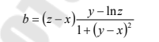

<!DOCTYPE html>
<html lang="en">
<head>
    <meta charset="UTF-8">
    <meta http-equiv="X-UA-Compatible" content="IE=edge">
    <meta name="viewport" content="width=device-width, initial-scale=1.0">
    <title>Polyakov Arseniy</title>
    <script>
        function f(x, y, z)
        {
            return z-x*(y-Math.log(z)/1+(y-x)**2);
        }

        document.write('<p>(Вариант №13)</p>');

        let x = NaN;
        let y = NaN;
        let z = NaN;

        while (true)
        {
            x = parseInt(prompt('Введите значение Х', '10'));
            if (!isNaN(x)) break;
            else alert('Пожалуйста введите Х правильно!');
        }

        while (true)
        {
            y = parseInt(prompt('Введите значение y', '10'));
            if (!isNaN(y)) break;
            else alert('Пожалуйста введите y правильно!');
        }

        while (true)
        {
            z = parseInt(prompt('Введите значение z', '10'));
            if (!isNaN(z)) break;
            else alert('Пожалуйста введите z правильно!');
        }

        document.write('<p><b>Значение переменной b, при условии:</b></p>');
        document.write('');
        document.write('<p>b = ' + f(x, y, z) + '</p>');
    </script>
</head>
<body>
</body>
</html>
